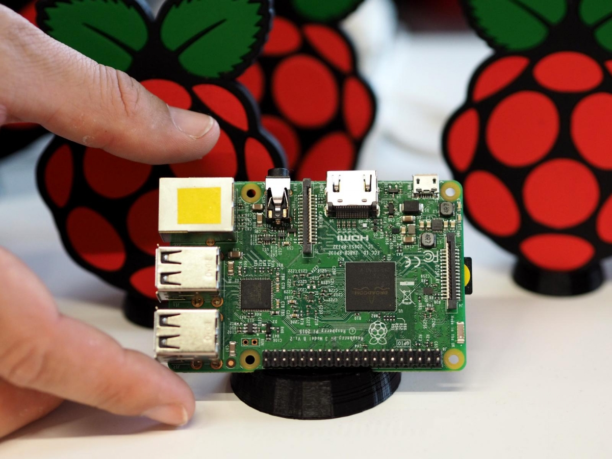

La Raspberry Pi est un petit ordinateur monocarte à faible coût, développé au Royaume-Uni par la Fondation Raspberry Pi. Son objectif principal est de promouvoir l'apprentissage de l'informatique et la programmation dans les écoles.
Cette carte est polyvalente et peut être utilisée pour divers projets, tels que la création d'un ordinateur de bureau basique, d'un centre multimédia, ou même de dispositifs électroniques personnalisés. Elle offre une plateforme accessible pour explorer la programmation, l'électronique et l'informatique en général.
Pour la mettre en route, il faut la connecter à une source d'alimentation, un écran via le port HDMI, et ajouter un clavier et une souris. Ensuite, tu peux installer un système d'exploitation (comme Raspbian) sur une carte microSD pour commencer à l'utiliser comme un ordinateur classique.
La Raspberry Pi peut remplir certaines fonctions d'un ordinateur traditionnel, mais elle est souvent utilisée comme complément, en particulier dans des projets spécifiques nécessitant une faible consommation d'énergie et une taille réduite.
En somme, la Raspberry Pi 3 B+ représente une plateforme informatique souple, adaptée à des applications variées, tout en encourageant l'apprentissage et l'expérimentation dans le domaine de l'informatique et de l'électronique